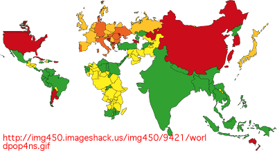
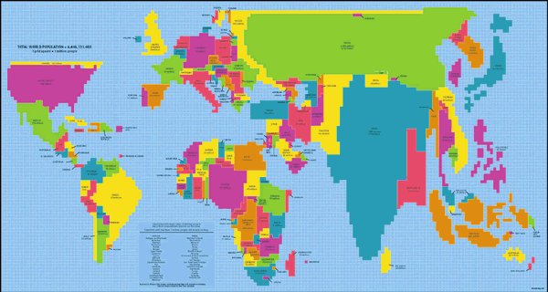

African populations
The map below shows all countries in Africa.
Click the checkbox Show circles to draw a circle centred on each country with area proportional to the land area of the country. Each circle contains virtually the same ink as was used on the original map.
Now select Area = Population from the pop-up menu at the bottom. The circles are now drawn with area proportional to the population in the countries.
Imagine these circles being moved and reshaped so that the circles for adjacent countries touch, but retain the same areas.
This distorted map would increase the map areas of countries with high population densities compared to the others.
Examples of world population maps
There is no unique way to distort the areas of the countries — there are several goals in such a map:
- Map areas must be proportional to population.
- Countries should retain the same borders with other countries.
- The overall shape of countries and regions should be recognisable.
The map below places greatest emphasis on keeping recognisable shapes for the individual countries but their relative positions are distorted so much that some regions are almost unrecognisable (e.g. Africa and the Middle East).

The next map, produced by ODT Maps (http://ODTMaps.com) is much better, though the shapes of some countries (especially Russia) are quite distorted and the UK appears to be further north than Canada.

The map below is much simpler with each country represented by a rectangle, but it is still fairly effective for displaying the world's population.